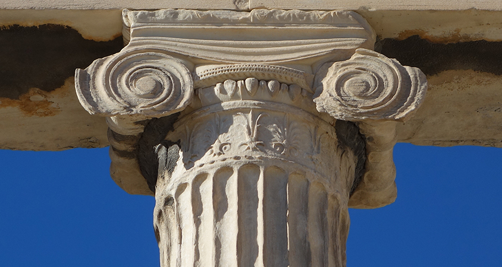
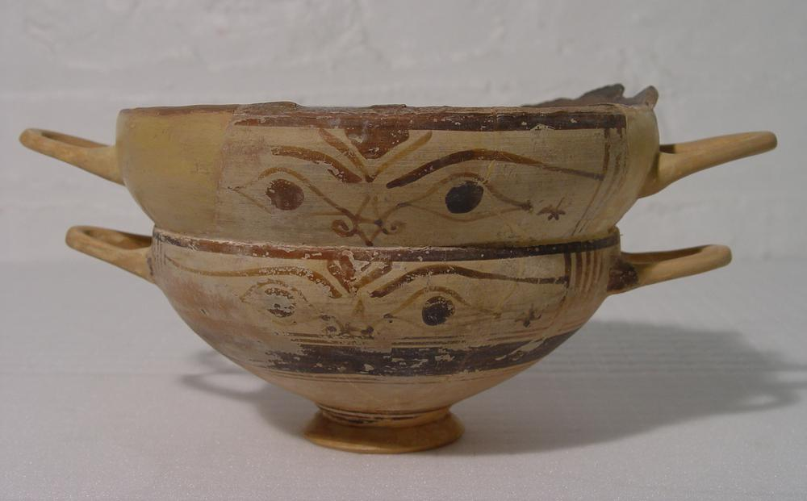
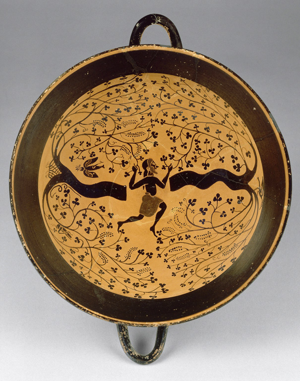
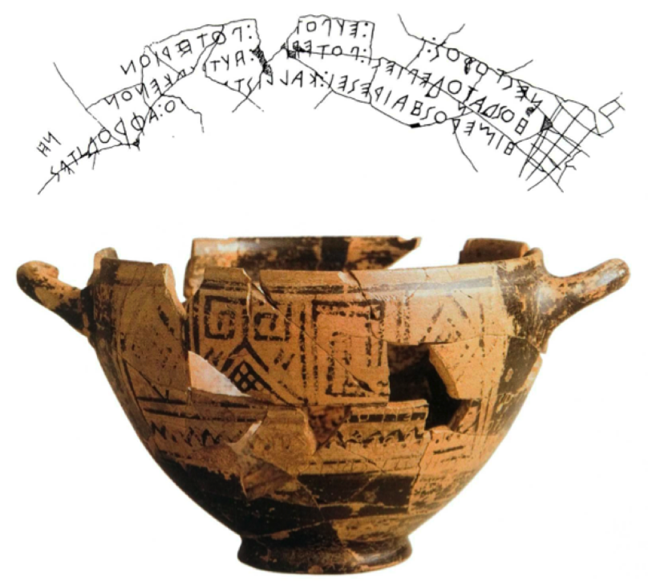
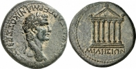
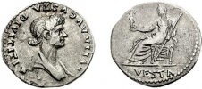
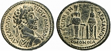

The Ionic order of architecture originated in Ionia and is characterized by volutes, or scrolls, on columns. Unlike the Doric order, Ionic columns are supported by a base. Ionic architecture usually has a running frieze of sculptural relifs. Ionic columns are found in the inscribed cotive column from Naxos of the 7th century BCE, the temple dedicated to Hera on Samos, the Temple of Artemis at Ephesus, the Ionic frieze around the cella of the Parthenon, and the interior of the gateway to the Acropolis.

Ionian pottery was influenced by Attic black-figure pottery. The exterior of lips on Ionian cups are decorated with ivy and the interior is decorated with animals or birds. Unlike Attic techniques, Ionic pottery uses thin lines that imitate incisions. Here are some examples of Ionian pottery:


One famous object originally made on the island of Rhodes around 750 BCE was the Cup of Nestor, which is the earliest example of Greek writing and poetry since it is written in Homeric hexameter. The etching refers to Nestor, a character from Homer's Iliad, and it is thought to have been etched around 725 BCE in Pithecusae. The cup was discovered in a grave of a ten-year-old boy.

Here are some examples of coins from the major Ionic cities of Miletus and Ephesus:


